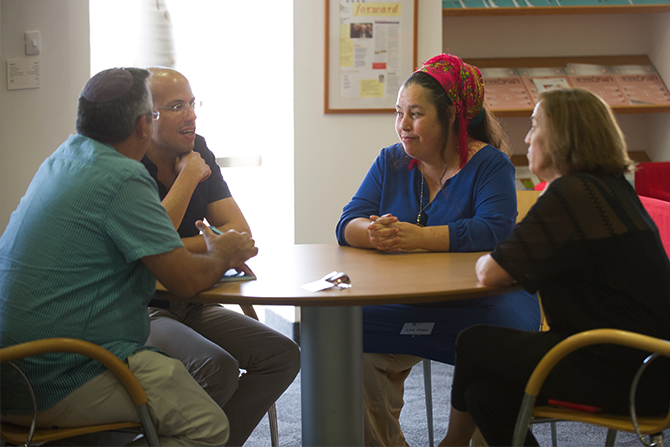

"התוכנית מבקשת להעמיק את השתי וערב של התרבות היהודית – מעשה אריגה משותף," אמר מישאל ציון, מנהל התוכנית. "המרחב הזה הוא המרחב שבו נוכל לדבר על הטכניקות המתאימות לכך, לחדש ולהתחדש בעבודה שאתם עושים בתחום התרבות היהודית – מרחב של מחלוקת בשאלה מהי יהדות או מהי תרבות יהודית, שאיננו מתכוונים להכריע בה".
בתוכנית 15 עמיתים, אנשי חינוך ויזמי תרבות וחברה מרקע מגוון, הנותנים ביטוי לפנים רבים של התרבות היהודית והישראלית.
"הרעיון לקיים תוכנית כזאת קיים כבר כמה שנים. החיבור בין התוכנית ובין מכון מנדל מובן מאליו מצד אחד, שהרי קרן מנדל עוסקת רבות בזהות יהודית ובפיתוח מנהיגות, ומצד שני – זהו אתגר גדול לכנס יחד אנשים בעלי תפיסות עולם שונות סביב נושא כה שנוי במחלוקת", אמר
ד"ר אלי גוטליב, מנהל מכון מנדל למנהיגות.

תוכנית מנדל למנהיגות בתרבות יהודית מיועדת למנהיגים המחויבים להעשרה ולשגשוג של התרבות היהודית בישראל ומבקשים להשקיע בלימוד ובשכלול יכולותיהם המקצועיות בצוותא עם אנשים בעלי השקפות עולם וניסיון מקצועי שונים משלהם. אורך התוכנית שנה אקדמית אחת, ותוכנית הלימודים בה משלבת לימודי ליבה (בירור חזון אישי וקולקטיבי, יהדות וישראליות, חינוך ומנהיגות) וכן מפגשי הנחיה וסדנאות. חברי הסגל של התוכנית הם ד"ר רות קלדרון ודוד גדג'.